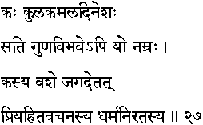
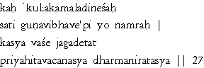

|

|
Verse 27 - Meaning:
Q: What (kah) enhances the fame of a family (kula), just as the sun makes a lotus bloom and reveal its beauty and perfume ? (kamala dinesah)
A: The presence of one in the family who, though endowed with great merits,(sati guna vibhave api) is yet free from self-conceit.(yo namrah)
Q: Who is able to win over to his side (kasya vase) the society in which he is living ?(jagad etat)
A: That one who speaks only what is true and beneficial (to the society at large) (priya - hita vacanasya) and who is righteous in his conduct. (dharma-niratasya)
|